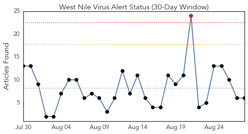
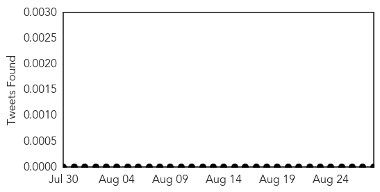
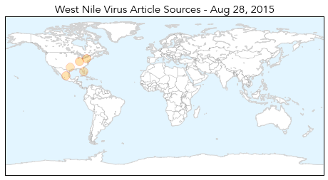

30 Day Trends
Web: 1 alerts, 0 warnings
Twitter: 2 alerts, 0 warnings
Top Articles:
- 0.984
- Virus-carrying mosquitoes found in Goshen
- 0.975
- Case of West Nile reported in county
- 0.916
- EagleCountryOnline.com West Nile Virus Activity Increasing In The Hoosier State
- 0.896
- Three cases of West Nile virus confirmed in Baltimore city
- 0.818
- Pinellas man, 32, infected with West Nile virus
- 0.765
- 4 People in Texas Die from West Nile
Top Tweets:
- 0.548
- Flavivirus news: Weston health district says take steps to prevent West Nile virus - The Weston... http://t.co/fHO5kwRgun pathogenposse
- 0.504
- Flavivirus news: McKinney reports first human case of West Nile virus this season - Dallas Morn... http://t.co/Vv0hwne6sk pathogenposse
Web/News Articles
Tweets
Article Locations
Article Confidences